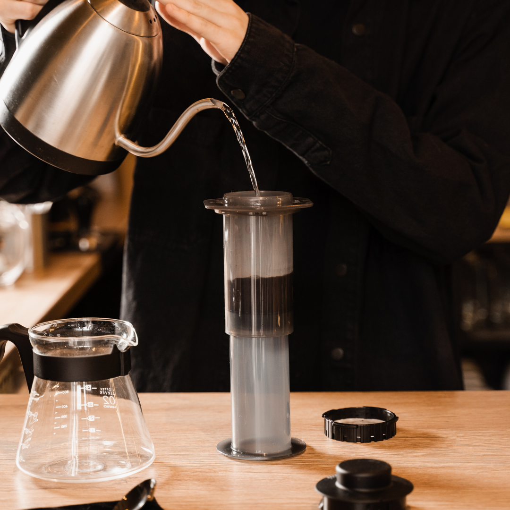

Brewing Methods
Explore Popular Brewing Methods
Discover different brewing techniques, each with its own unique qualities, benefits, and flavor profiles.
French Press

Pros:
- Rich flavor.
- Easy to use and requires minimal equipment.
- Can make multiple cups at once.
Cons:
- More cleanup compared to other methods.
- May leave sediment in the cup.
Pour-over

Pros:
- Provides control over brewing time and temperature.
- Bright flavor.
- Minimal sediment in the cup.
Cons:
- Requires more time.
AeroPress

Pros:
- Portable and versatile for different coffee styles.
- Quick brewing time.
- Easy cleanup.
Cons:
- Can only brew one cup at a time depending on which size.